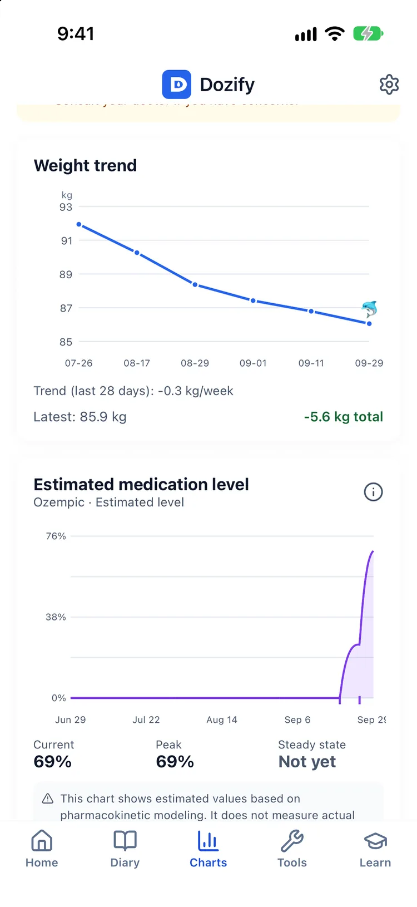
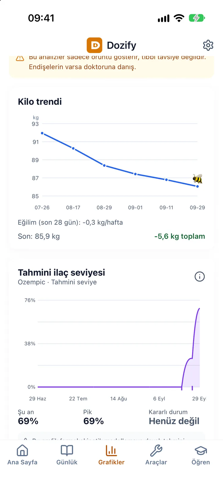

A GLP-1 medication level chart drawn from your own doses
Kendi dozlarından çizilen tahmini ilaç seviyesi eğrisi
The question behind the chart
People on a weekly injection often wonder the same thing: how much of last week's dose is still working, and does that explain how today feels? A dose log answers when. It does not show what happens between one dose and the next, and that gap is where most of the questions live.
Grafiğin arkasındaki soru
Haftalık iğne kullananlar sık sık aynı şeyi merak ediyor: geçen haftaki dozun ne kadarı hâlâ etkili, bugün kendimi böyle hissetmemin sebebi bu mu? Doz kaydı "ne zaman" sorusunu cevaplar. İki doz arasında ne olduğunu göstermez; soruların çoğu da tam o arada.
What the curve is
After each injection the estimated level rises, then falls away over time according to the medicine's half-life. Dozify draws that from the doses you log (the date, the amount and the medicine) using a pharmacokinetic profile for each injectable molecule, such as semaglutide in Ozempic® and Wegovy® or tirzepatide in Mounjaro® and Zepbound®. A reference line marks the typical peak for a dose, so you can see where today's estimate sits against it. With regular injections the rise and fall settles into a consistent rhythm, which the app calls steady state.
The screen says it in so many words: "This is an average estimate from pharmacokinetic modeling. It does not measure actual concentration." It is not a blood test, and it knows nothing about your body that your log does not.
Eğri ne gösteriyor
Her enjeksiyondan sonra tahmini seviye yükselir, sonra ilacın yarı ömrüne göre zamanla azalır. Dozify bunu kaydettiğin dozlardan (tarih, miktar ve ilaç) her enjekte edilen molekül için ayrı bir farmakokinetik profille çizer; Ozempic® ve Wegovy®'deki semaglutid ya da Mounjaro® ve Zepbound®'daki tirzepatid gibi. Bir referans çizgisi bir dozun tipik zirvesini gösterir; bugünkü tahminin ona göre nerede durduğunu görürsün. Düzenli enjeksiyonlarla bu iniş çıkış tutarlı bir ritme oturur; uygulama buna kararlı durum diyor.
Ekran bunu açıkça yazar: "Bu grafik farmakokinetik modelleme ile hesaplanan ortalama bir tahmindir. Gerçek vücuttaki konsantrasyonu ölçmez." Kan testi değildir ve vücudun hakkında, kaydının bilmediği hiçbir şeyi bilmez.


Weight and dose on one line
The curve sits on the same timeline as your doses and your weight trend. A dose change, a missed week or a long flat stretch on the scale shows up in context, next to what the medicine was estimated to be doing at the time, instead of in a separate app you have to line up by hand.
Kilo ve doz aynı çizgide
Eğri, dozlarınla ve kilo trendinle aynı zaman çizelgesinde durur. Bir doz değişikliği, kaçan bir hafta ya da tartının uzun süre kımıldamadığı bir dönem, o sırada ilacın tahminen ne yaptığının yanında, bağlamıyla görünür; elle hizalaman gereken ayrı bir uygulamada değil.
Hunger and food noise across the week
If some days of your week feel hungrier than others, the curve gives you something concrete to compare against. Dozify lets you rate food noise in your check-ins and keeps those ratings over time, in the same app as the estimate. You can look at both for the same weeks and see for yourself whether the noisy days tend to land in the same place each week. Whatever you find is your own pattern and worth taking to your prescriber. The app does not explain it, diagnose it or suggest moving a dose because of it.
Hafta boyunca açlık ve yemek gürültüsü
Haftanın bazı günleri diğerlerinden daha aç geçiyorsa, eğri karşılaştırabileceğin somut bir şey sunar. Dozify, kontrollerinde yemek gürültüsünü (food noise) puanlamana izin verir ve bu puanları zaman içinde, tahminle aynı uygulamada tutar. Aynı haftalar için ikisine birden bakıp gürültülü günlerin her hafta aynı yere denk gelip gelmediğini kendin görebilirsin. Ne bulursan bul, bu senin kendi örüntün ve hekiminle konuşmaya değer. Uygulama onu açıklamaz, teşhis koymaz ve bu yüzden dozu kaydırmayı önermez.
Injections only
The curve is drawn for injectable medicines. For a medication taken only by mouth, such as Rybelsus® or the Wegovy tablet, Dozify shows no curve at all, because the app has no oral profile and will not invent one. A wrong figure is worse than a blank one. Tablets are still logged, reminded and reported like everything else; the GLP-1 pill tracker page covers how.
Yalnızca enjeksiyonlar
Eğri, enjekte edilen ilaçlar için çizilir. Rybelsus® ya da Wegovy tablet gibi yalnızca ağızdan alınan bir ilaçta Dozify hiç eğri göstermez; çünkü uygulamada ağızdan alınan ilaçlar için bir profil yok ve uygulama bir profil uydurmaz. Yanlış bir rakam, boş bir alandan daha kötüdür. Tabletler yine her şey gibi kaydedilir, hatırlatılır ve rapora girer; nasıl olduğu GLP-1 hap takibi sayfasında.
Where it stops
The estimate is an average built from a model and your log, so it is only as complete as your entries: a dose you did not log is a dose the curve does not know about. It does not account for how your own body handles the medicine, and the level it shows is not a target. How long a particular medicine stays in the body is set out in its prescribing information, and your pharmacist can walk you through it. Dozify does not recommend a dose, a dose day or a change to either. The curve is part of Premium; dose logging and reminders are free permanently.
Nerede duruyor
Tahmin, bir model ve senin kaydınla kurulmuş bir ortalamadır; dolayısıyla en fazla girdilerin kadar eksiksizdir: kaydetmediğin bir doz, eğrinin bilmediği bir dozdur. Vücudunun ilacı nasıl işlediğini hesaba katmaz ve gösterdiği seviye bir hedef değildir. Bir ilacın vücutta ne kadar kaldığı o ilacın prospektüsünde yazar; eczacın sana bunu anlatabilir. Dozify doz, doz günü ya da bunlarda bir değişiklik önermez. Eğri Premium'un parçasıdır; doz kaydı ve hatırlatıcılar kalıcı olarak ücretsizdir.
Download on the App Store App Store'dan indir
Questions
Sorular
Is this my actual medication level?
Bu benim gerçek ilaç seviyem mi?
No. It is an average estimate from pharmacokinetic modelling, drawn from the doses you logged. It does not measure the concentration in your blood, and the app says so on the screen.
Hayır. Kaydettiğin dozlardan, farmakokinetik modellemeyle çizilen ortalama bir tahmindir. Kanındaki konsantrasyonu ölçmez ve uygulama bunu ekranda yazar.
How long does semaglutide stay in the body?
GLP-1 ilacı vücutta ne kadar kalır?
The figure for each medicine is in its prescribing information, and your pharmacist or prescriber can explain what it means for you. What Dozify adds is the shape of it across your own logged doses: when the estimate rises, how it fades, and how one week overlaps the next.
Her ilaç için bu bilgi kendi prospektüsünde yazar; senin için ne anlama geldiğini eczacın ya da hekimin anlatabilir. Dozify'ın kattığı, bunun kendi kaydettiğin dozlar boyunca aldığı şekil: tahminin ne zaman yükseldiği, nasıl azaldığı ve bir haftanın bir sonrakiyle nasıl üst üste bindiği.
Why is there no curve for my tablet?
Tabletim için neden eğri yok?
The app has no profile for oral medicines, so for a medication taken only by mouth it shows no curve rather than a number it cannot stand behind. Your tablet doses are still logged and reminded as usual.
Uygulamada ağızdan alınan ilaçlar için bir profil yok; bu yüzden yalnızca ağızdan alınan bir ilaçta, arkasında duramayacağı bir rakam yerine hiç eğri göstermez. Tablet dozların yine her zamanki gibi kaydedilir ve hatırlatılır.
Is the medication-level chart free?
İlaç seviyesi eğrisi ücretsiz mi?
It is part of Premium, alongside the AI meal photo (after its 3 free analyses) and the doctor report. Logging doses and getting reminders are free permanently.
Premium'un parçası; AI öğün fotoğrafı (3 ücretsiz analizden sonra) ve doktor raporuyla birlikte. Doz kaydetmek ve hatırlatıcı almak kalıcı olarak ücretsiz.
Can I use the curve to decide when to take my next dose?
Bir sonraki dozumu ne zaman alacağıma eğriye bakarak karar verebilir miyim?
No. Your schedule and dose are your prescriber's to set. The curve is there to help you understand and describe your weeks, not to time or change a dose.
Hayır. Programını ve dozunu reçeteni yazan hekim belirler. Eğri, haftalarını anlaman ve anlatman için var; bir dozun zamanını ayarlamak ya da dozu değiştirmek için değil.
What if I forgot to log a dose?
Bir dozu kaydetmeyi unuttuysam?
Add it with the date and time it actually happened. The curve is built from your log, so until the entry is there it does not know about that dose.
Gerçekte olduğu tarih ve saatle ekle. Eğri kaydından çizildiği için, kayıt oraya girene kadar o dozdan haberi olmaz.
Read next
Guides, with their sources named: what GLP-1 actually is, what the leaflet says about a missed dose and how to read a trend when the scale has stalled.
Elsewhere in Dozify: the shot tracker, the side-effect journal, the GLP-1 pill tracker, AI calories and protein from a photo and why your records stay on the phone.
Sonra şunlar
Kaynağı yazılı rehberler: GLP-1'in aslında ne olduğu, kaçan doz için prospektüsün ne dediği ve tartı durduğunda trend nasıl okunur.
Dozify'ın diğer yanları: iğne takibi, yan etki günlüğü, GLP-1 hap takibi, fotoğraftan kalori ve protein ve kayıtların neden telefonda kalıyor.